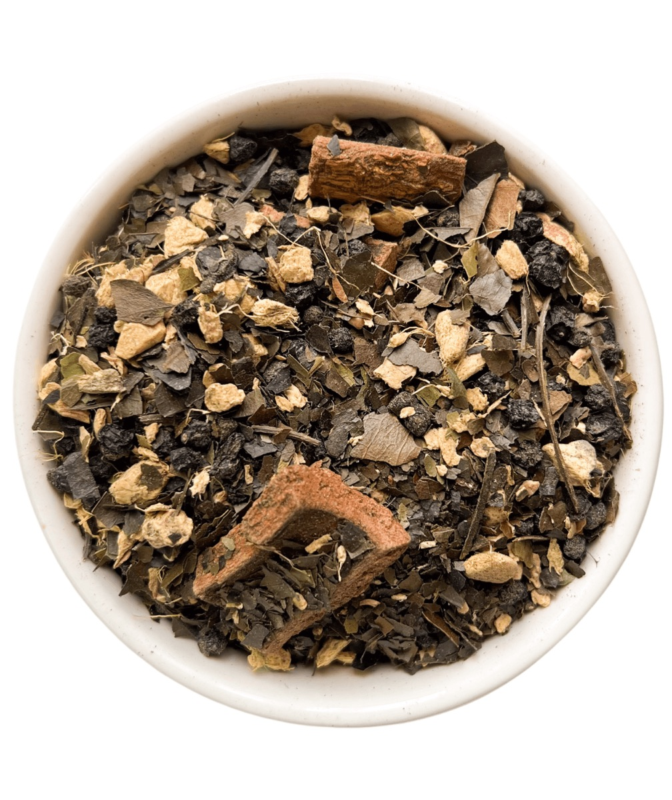

Deep in the Ecuadorian Amazon, a woody vine climbs the canopy with curved thorns that resemble a cat's claws, which is how una de gato earned its name. For generations, Kichwa communities and traditional healers have peeled its inner bark and simmered it low and slow as one of the forest's most trusted daily medicines. It is a plant that has earned its place not through trends or marketing claims, but through centuries of observation, respect, and lived experience passed from elder to elder.
Traditional Uses
May support a healthy, balanced immune response
May support joint comfort and everyday mobility
May support gut health and a calm digestive environment
Traditionally taken during seasonal changes to help the body stay resilient
How To Prepare
Bring 2 cups of water to a boil.
Add 1 heaping tablespoon of Cat's Claw bark.
Reduce to low, cover, and simmer for 30 minutes.
Strain and drink warm.
Big batch: bring 5 cups of water to a boil with 1/4 cup of herb, simmer covered for 30 minutes, then store in a sealed glass jar in the fridge for up to 4 days. Always reheat before drinking. Rhythm: take for up to 3 consecutive weeks, then rest for 1 week.
Chuchuhuasi comes from a rainforest giant that can rise thirty meters above the forest floor. Its name in Quechua is often translated as trembling back, because this is the bark the elders reached for when the body ached from a life of work. Harvesters carry its story with pride: a tree strong enough to stand for a century lends a little of that strength to the people who prepare it with respect. It remains one of the most beloved barks in the Amazonian apothecary.
Traditional Uses
May support joint comfort and flexibility
May support strong, healthy bones as the body ages
Traditionally taken by elders for lower back ease and stamina
Traditionally shared during long harvests to keep the body feeling capable
How To Prepare
Bring 2 cups of water to a boil.
Add 1 heaping tablespoon of Chuchuhuasi bark.
Reduce to low, cover, and simmer for 30 minutes.
Strain and drink warm.
Big batch: 5 cups of water with 1/4 cup of herb, simmered covered for 30 minutes, keeps refrigerated in a sealed glass jar for up to 4 days. Always reheat before drinking. Rhythm: up to 3 consecutive weeks, then a 1 week break.
Plate No. 03
Valerian Root
Valeriana officinalis
OriginAndean highlands
Elevation2,500 to 3,600 m
EcosystemMountain meadow
PreparationDecoction
Ancestral Wisdom
Valerian is one of the oldest documented sleep herbs in the world, and in the high country its root is still dug by hand, washed in cold mountain water, and simmered as an evening medicine. Healers speak of it as a root that teaches the body to set the day down. Its earthy aroma is unmistakable, and so is the tradition behind it: a warm cup in the last hour before bed, taken slowly, with the lights low.
Traditional Uses
May support deep, restful sleep
May support a calm, settled nervous system
Traditionally taken in the evening to unwind after demanding days
How To Prepare
Bring 2 cups of water to a boil.
Add 1 heaping tablespoon of Valerian root.
Reduce to low, cover, and simmer for 30 minutes.
Strain and drink warm, ideally within the hour before bed.
Rhythm: up to 3 consecutive weeks, then a 1 week break. Roots hold their strength for a second, lighter brew: reuse once with half the water.
Plate No. 04
Guayusa
Ilex guayusa
OriginUpper Amazon
Elevation400 to 1,200 m
EcosystemRainforest gardens
PreparationInfusion
Ancestral Wisdom
Long before dawn, Kichwa families in the Ecuadorian Amazon gather around the fire to share guayusa, tell dreams, and set intentions for the day. The leaf has been cultivated in forest gardens for a very long time, so long that it is rarely found growing wild. Guayusa carries the same caffeine as coffee alongside theobromine, the feel-good compound in cacao, which is why the energy arrives smooth and steady, without the spike and without the crash. It is a leaf of clarity, community, and morning ritual.
Traditional Uses
May support clean, sustained energy through the morning
May support mental clarity and steady focus
A beloved coffee alternative, same caffeine without the crash
Traditionally shared before dawn for dream telling and intention setting
Delicious chilled over ice, or added to a morning smoothie
How To Prepare
Bring 2 cups of water to a gentle boil, never a rolling boil.
Add 1 heaping tablespoon of Guayusa leaves.
Turn the heat off, cover, and steep for 15 to 30 minutes.
Strain and drink warm.
Turning the heat off before steeping preserves the leaf's more delicate active compounds. Best made fresh. Rhythm: gentle enough for daily use, no cycling required.
Plate No. 05
Matico
Piper aduncum
OriginAndes to Amazon
Elevation500 to 1,500 m
EcosystemForest edge, riverbanks
PreparationInfusion
Ancestral Wisdom
Known across the Andes as the soldier's herb, matico grows generously along riverbanks and forest edges, always close to the people who need it. Its aromatic leaves have been steeped for the stomach, pressed for the skin, and inhaled for the breath for generations. It is the kind of plant every grandmother in the sierra knows by sight and by scent.
Traditional Uses
May support digestive comfort after meals
Traditionally used to care for the skin
A favorite for steam inhalation: pour a hot cup into a bowl, drape a towel over your head, and breathe deeply for 5 to 10 minutes
How To Prepare
Bring 2 cups of water to a gentle boil, never a rolling boil.
Add 1 heaping tablespoon of Matico leaves.
Turn the heat off, cover, and steep for 15 to 30 minutes.
Strain and drink warm.
Best made fresh in small batches. Rhythm: up to 3 consecutive weeks, then a 1 week break.
Plate No. 06
Soursop
Annona muricata
OriginAmazon lowlands
Elevation0 to 600 m
EcosystemHumid tropics
PreparationInfusion
Ancestral Wisdom
The soursop tree, known through Latin America as guanabana, gives twice: a sweet fruit loved by children and a broad green leaf treasured by their grandmothers. In the warm lowlands the leaves are steeped gently into a soft, calming tea taken through the day or in the quiet of the evening. It is medicine of ease, unhurried, familiar, and generous.
Traditional Uses
May support a sense of calm and ease
May support whole body balance when taken consistently
Traditionally steeped as a gentle everyday tea for the whole household
How To Prepare
Bring 2 cups of water to a gentle boil, never a rolling boil.
Add 1 heaping tablespoon of Soursop leaves.
Turn the heat off, cover, and steep for 15 to 30 minutes.
Strain and drink warm.
Rhythm: gentle enough for daily use, no cycling required. Also lovely chilled over ice on warm afternoons.
Plate No. 07
Clavo Huasca
Tynanthus panurensis
OriginAmazon basin
Elevation200 to 800 m
EcosystemTropical rainforest
PreparationDecoction
Ancestral Wisdom
Cut the bark of this rainforest vine and the air fills with the scent of clove, which is exactly how clavo huasca, the clove vine, earned its name. Amazonian communities simmer it as a warming tonic, the cup you reach for when the rains set in and the body wants heat from the inside out. It has long been associated with vitality and inner fire.
Traditional Uses
May support inner warmth and everyday vitality
May support healthy circulation
Traditionally simmered as a warming digestive tonic in the rainy season
How To Prepare
Bring 2 cups of water to a boil.
Add 1 heaping tablespoon of Clavo Huasca bark.
Reduce to low, cover, and simmer for 30 minutes.
Strain and drink warm.
Rhythm: up to 3 consecutive weeks, then a 1 week break. Barks reward a big batch: brew 5 cups with 1/4 cup of herb and keep refrigerated for up to 4 days.
Prepare It Properly
Infusion vs decoction
Not all herbs are prepared the same way. Understanding the difference sets you up for the best results, because the way you prepare your medicine matters just as much as what you choose to take.
The Gentle Way
Infusion
An infusion is what most people call tea: pouring hot water over delicate herbs like leaves and flowers and allowing them to steep. It works well for softer plant material, and turning the heat off before steeping preserves the more delicate active compounds.
Bring 2 cups of water to a gentle boil, never a rolling boil
Add 1 heaping tablespoon of your herbs
Turn heat off, cover, and steep for 15 to 30 minutes
Strain and drink warm
For: Guayusa, Matico, Soursop, and our more delicate blends
The Ancestral Way
Decoction
A decoction is what we use for all barks, roots, and tougher plant material, which require longer exposure to heat to release their full medicinal compounds. You bring the water and herbs to a boil together, then reduce to a low simmer with the lid on. This is the method the indigenous communities of the Amazon and Andes have always used. It isn't a shortcut. It's THE protocol.
Bring 2 cups of water to a boil with 1 heaping tablespoon of herb
Reduce to low, cover, and simmer for 30 minutes
Strain and drink warm
For: Cat's Claw, Chuchuhuasi, Valerian Root, Clavo Huasca, and our bark and root blends
What You Will Need
Gather these before you brew
✓A medium saucepan with a lid, or a stove-top safe glass pot
✓A fine mesh strainer
✓A glass jar with a lid for storage
✓A measuring cup or tablespoon
✓A mug you love. This is a ritual, not a chore
Formulated Protocols
The signature blends
Pre-designed combinations built on the same plants in this archive. They do the mixing for you.

Zapped In
Sustained natural energy for the days that ask more of you.
Start with one herb at a time so you can feel what your body responds to, or let one of our pre-designed protocols do the choosing for you. Every plant in this archive is sustainably wild-harvested with the Kichwa communities of Ecuador.